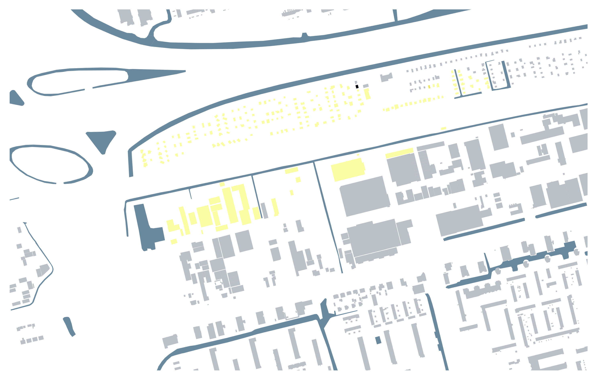
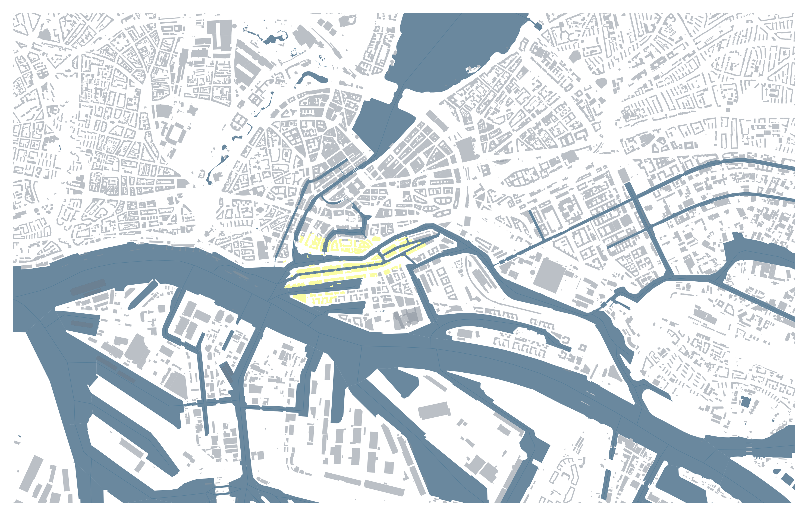
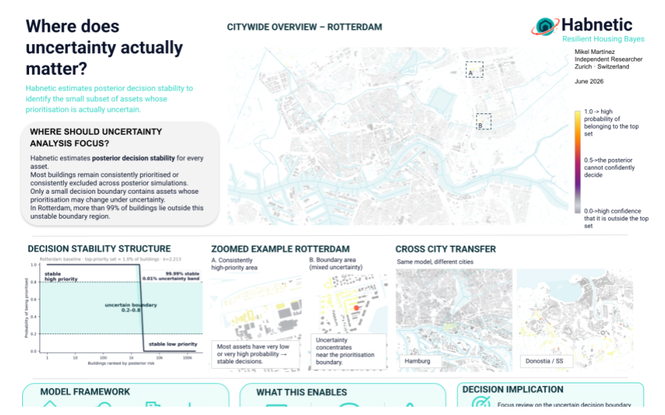
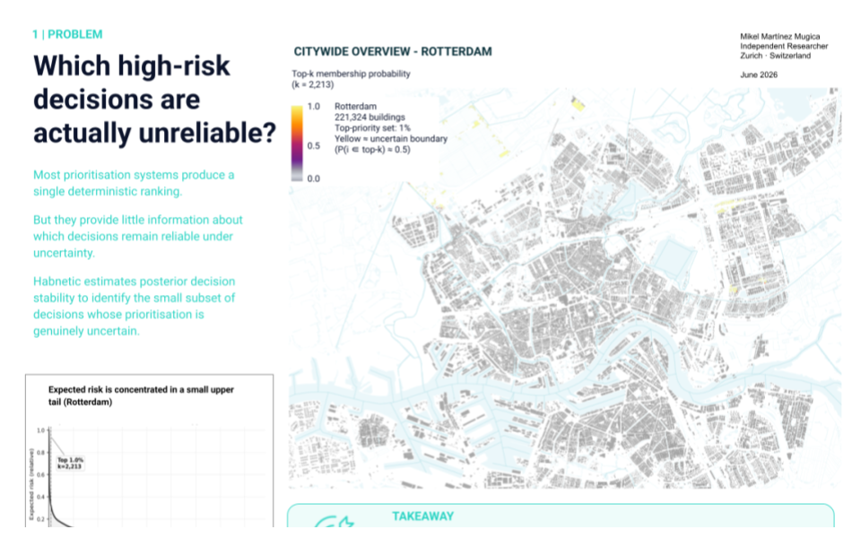
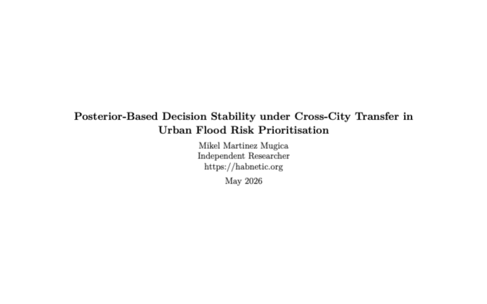

Uncertain estimate
Risk, exposure, distance, cost and probability are continuous quantities—and none is known perfectly.
Decision stability under uncertainty
Planning and risk systems often turn uncertain continuous estimates into fixed choices: selected or not selected, above or below a threshold, inside or outside a priority set.
Habnetic tests whether those choices remain the same when uncertainty is propagated through the model—identifying decisions that are already reliable and cases that genuinely require further review.


Baseline case study
Why decision stability?
Risk, exposure, distance, cost and probability are continuous quantities—and none is known perfectly.
A system introduces a boundary: top 1%, within 20 m, above a threshold, eligible or not eligible.
If uncertainty does not change the outcome, the decision is stable. If it does, that case deserves attention.
Initial findings
In the Rotterdam reference case, posterior simulations agree on the prioritisation status of more than 99% of buildings.
Posterior uncertainty affects only a small subset of borderline assets rather than the entire city.
Posterior disagreement reveals which assets may change status across plausible model outcomes.
Experts can focus on unstable boundary cases instead of revisiting every prioritisation decision.
Research outputs
Posterior-Based Decision Stability in Urban Flood Risk Prioritisation · Rapid-Fire presentation · Bournemouth, September 2026.



Posterior-Based Decision Stability under Cross-City Stress Testing in Urban Flood Risk Prioritisation
Read on Zenodo →About Habnetic
Habnetic is an independent open-source research project studying how uncertainty propagates into discrete planning and prioritisation decisions.
The current case study uses urban flood prioritisation to develop and test the framework across Rotterdam, Hamburg and Donostia-San Sebastián.